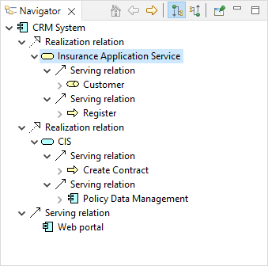
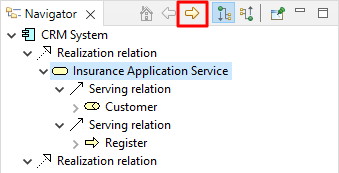
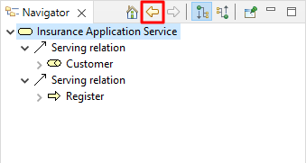
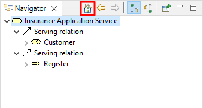
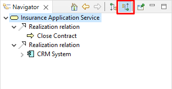
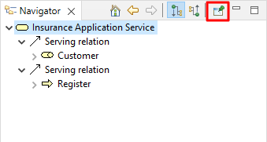

导航器窗口显示当前选定的模型概念及其与其他概念的所有关系。它用于显示并允许通过它们的关系在连接的概念之间导航，并与模型树窗口和视图结合使用。
The Model Tree acts as a "flat" repository for all the elements, relationships and Views in a model. Views are graphical configurations of those concepts. However, the Navigator is able to show all of a concept's relationships at the model level regardless of how they are presented in a View.
To use the Navigator window, select any element or relationship in the Model Tree or in a View. The Navigator tree will update to reflect the current selection. The tree shows the "root" selected concept and any relationships that stem from it and any "target" concepts from those relationships:

The Navigator Window
在上面的屏幕截图中，用户选择了“CRM系统”元素。所选元素与“客户管理服务”、“保险应用服务”和“CIS”三个元素之间存在三种实现关系。 From these three elements further relationships are shown between them and their target concepts.
It is possible, therefore, to "drill down" into the Navigator tree and traverse from concept to concept following it and its child relationships from source to target.
所选子概念可以通过在树中双击它或通过单击窗口工具栏上的“进入”按钮成为“根”概念：

The "Go Into" Button
Conversely, clicking the "Back" button takes you back to the previously selected concept:

“返回”按钮
The "Home" button takes you back to the main root concept that was originally selected:

The "Home" button
默认情况下，导航器显示从源到目标概念的关系。通过单击窗口工具栏上的“显示源关系”按钮，可以反向显示从目标到源的概念关系：

Show source relations mode
In the above screenshot the element "CRM System" is the target of the two "Used By" relationships. So the flow is from "Mainframe" to "Claim Files Service" to "CRM System", and from "NAS File Server" to "Customer File Service" to "CRM System".
如果需要，可以通过选择导航器窗口中的PIN按钮来固定所选概念：

The "pin" button
It is also possible to drag and drop any selected elements and/or relationships from the Navigator Tree to a View, in exactly the same way as dragging from the Model Tree to a View (see 将模型树中的元素和关系添加到视图)